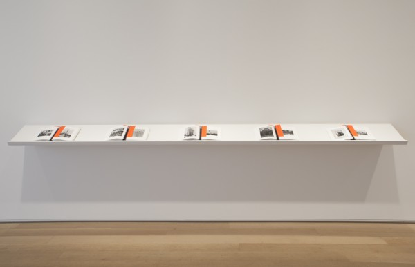
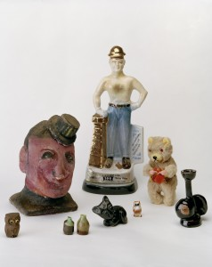
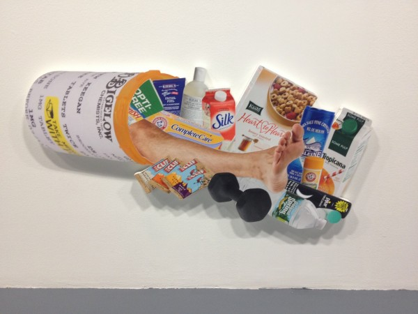

-
Federal Blue & Deep Cool Red: A Conversation with Matt Keegan
by Zak Kitnick November 26, 2012
Zak Kitnick: What’s your favorite color? I thought we would start simple. But I think it’s a question that makes sense after seeing your last solo show in New York. In I Apple New York, you see this color and it’s kind of familiar but also anonymous and you realize it’s the color of the bridges connecting the five boroughs. So there’s this conceptual relationship to color. Maybe we could talk about that show, or that decision, that process.
Matt Keegan: I learned about the bridge color palette that is maintained by New York City’s Public Design Commission, from an arts writer named Graham T. Beck. We were seated together at our friends’ wedding. Graham wrote about this commission for the New York Times in the fall of 2008, and when we met he was in the process of writing a larger article about the federal color palette, which is this color deck (shows).
ZK: This is a real thing?
MK: That’s the real color deck! You can order it for $158.
ZK: It seems like an artist book except it’s useful.
MK: I know, it seems like a Ruscha multiple. So the NYC commission maintains seven colors for bridges in the five boroughs, which include: Deep Cool Red, Federal Blue, George Washington Bridge Gray, Aluminum Green, Pulaski Red, Munsell Gray and Dark Green. Federal Blue and Deep Cool Red are my personal favorites. And, this Federal deck is used for anything that’s maintained by federal money — from mailbox blue to colors used by OSHA and NASA, the highway system, parks, etc. I became really interested in the idea that, of course, color is also a language! When you think about it in these familiar applications, like language, things disappear or are taken for granted. For example, you may not think about the blue of a mailbox nor would you think about the color of the George Washington Bridge as you traverse it, but they are particular, maintained and applied colors.
ZK: Are you using especially anonymous colors? Or they become iconic only when they’re applied to something? With the Golden Gate Bridge, there’s all of this labor, painting and repainting, and it’s the icon of a city. But when you isolate the color from the object, when it’s just applied to panels, it becomes symbolic.
MK: I think the Golden Gate Bridge is an anomaly for how the red resides in such an open expanse. You see the grandeur of the Verrazano Bridge when you go to the Rockaways but in New York there’s a different density of information, so you don’t see bridges in the same way you do in San Francisco. Byron Kim is the artist representative for the Public Design Commission, and four colors were added to the commission during his tenure. He mentioned two interesting details that were considered in selecting colors for bridges: one was thinking about the colors in relationship to the sky, which I think is beautiful to consider, and the other criteria which was used to determine the red for the Hell Gate Bridge is that this color was chosen specifically for how it would fade. It’s interesting to think about color as something durational. Graham T. Beck wrote that the federal color palette was initially created to simplify the manufacture of camouflage green. There were too many different greens in use so there needed to be a way to systematize one uniform color.
ZK: These are large-scale industrial applications. I read something a while ago that referred to your practice as ‘domestic conceptualism.’ But maybe we could think about some of the work in terms of urban conceptualism. There’s a recurring interest in cities. In particular, your last show felt like a love song to the city you live in. I sometimes forget that you’re also a photographer, so those color panels served as a background for these photographic observations. I thought that was a nice fusion, these observations of the city against the colors of the city.
MK: Yeah, the photographs provided a walking pace of the city. I wanted them to have a meandering quality, because the palette was rooted in this particular color system and other parts of the show were also quite specific. For example, I made a book called A History of New York that was an image-based iteration of the Ric Burns PBS series New York. My documentary short, Biography / Biographer, is about my father’s experience working at a private golf club frequented and later condemned by Robert Moses. I thought that these components had different registers of fixity and I wanted the photographs to have a more open logic. They were not depicting a particular neighborhood nor telling a specific story.
Keegan’s ‘Untitled (Group 11),’ 2011. courtesy of the artist.
ZK: You just had a camera and walked around?
MK: Yeah I would say for over the course of about a year, I took a lot of pictures and the sixty that I exhibited were probably the edit of, I don’t know, three hundred or so –
ZK: A million?
MK: laughs, there were a million, or so photos. It’s interesting because although photography has been a really consistent part of my work, for years now, I’m always negotiating my relationship to it. It’s pretty irrelevant at this point, but I never studied photography in school.
ZK: It’s nice when you don’t know how to do something, it kind of keeps it interesting.
MK: I think about photography all the time and it directly impacts my thoughts about making videos.
ZK: The Biography / Biographer video in which your dad talks about Robert Moses was interesting. Just to hear about the person that instituted all these changes. We’re in Greenpoint now, and they just announced that they’re going ahead, and at the end of this street they’re building ten different forty-story towers that will completely transform this neighborhood. I feel like sometimes there’s so much change and it happens so fast, and it didn’t used to be like this. But watching this video, one realizes change is not new, it’s constant.
MK: Watching the Ric Burns’ documentary New York, was such a good continuing ed class for learning about the city. What’s clear early into the series is that from Alexander Hamilton to DeWitt Clinton and on, New York City has always been rooted in commerce, and is always in the midst of change. Robert Moses generated a tremendous amount of public projects as the “Master Builder” who was specifically focused on the automobile, and outward expansion to Brooklyn, Queens, Staten Island and Long Island. The building of condos on the waterfront of Greenpoint is just another form of an ever-changing NY landscape.
ZK: I guess now everything is being connected by ferry, which is interesting because it’s becoming a waterfront city like Chicago. Weren’t you just in Chicago for a show and made a book…?
MK: Last fall, I was in a three-person show at the ART Institute of Chicago and I made an iteration of my A History of New York book. I tabbed in bookmarks that feature information extracted from a PBS series called Chicago: City of The Century. I watched this series and took highlighted facts that I found noteworthy and then tabbed them in within the chronology of pre-1900’s New York.
‘A History of New York (for Chicago),’ 2011. courtesy of the artist.
ZK: I should look at this thoroughly at some point. We’re jumping around a lot, but that’s because you do a lot of different things. And they’re not unrelated. There’s an interesting relationship between the books you’re making and your text-based sculptures and wall-paintings. The sculptures have this simplicity and repetition, it almost seems like if you actually read it, it would feel like reading Gertrude Stein. But a book and a sculpture aren’t read the same way. Even if there’s a top and a bottom sometimes it’s hard to discern a left and a right.
MK: I began recent talks at the Art Institute of Chicago and at NYU by showing Biography/Biographer followed by a short 2-channel video called N as in Nancy, that features my mother alongside a series of images that she hand-assembled to teach English-as-a-Second-Language classes. As an image appears on the right-hand side, my mother immediately assigns words and phrases to them. I have some of them here.
ZK: Are these the actual flash cards? (laughs) Your mom is a good artist.
MK: She is! I go through about sixty of her flash cards over the course of the 3-minute video. So, for these lectures, I play the video of my father, I show install shots of I Apple NY, and then I show install shots from Lengua, which is the recent solo show I had at Altman Siegel that features the video of my mother. And I spoke about how I’m interested in trying to figure out the space of overlap between these two videos and exhibitions. And, I come to, not a conclusion, because who wants to make anything conclusive, but the video of my father is abiding by a set of familiar parameters that we’ve become accustomed to on PBS, and I made a documentary that abides by a similar structure — it has a musical score, there’s archival footage, there’s a talking-head shot that guides most of the narration, etc. If you saw it on PBS, it wouldn’t feel out of place. The video of my mother is completely different. It’s an art video without question. She’s assigning a set of words and phrases to a set of images that are implicitly intended to be read. Anyway, I bring up those lectures because my interest in language is the most foundational thing to my art making. I have always been interested in working with familiar phrases. With the I Apple NY show and Lengua the color system was really different. For Lengua, I chose colors that were related to the phrases, so for Nothing to Declare it’s green because green means go. It’s similar to the green used in EXIT signs. There are certain decisions that I made that were really dumb and they weren’t rooted in a particular color system. I’m trying to figure out the space between those things. What’s the space between the PBS-like documentary and the short video of my mom working with these images and language? There’s something perverse in both, and both are contingent on subjectivity but I don’t know, it’s hard to articulate. I’m certain that language is at the root of all of the work and our ability to communicate — that’s a central feature as well.
ZK: It seems like the way you’re using your mother’s ESL flash cards at the Kitchen right now is a distillation of all these disparate parts of your practice. There is this editing and cutting of the images, or cropping, and then this fundamental relationship of images to words. Looking at the work from the Kitchen, it’s striking that a lot these things are found images. In the past, a lot of your photographs (like Sundays) were photos of found objects.
‘Grids,’ 2012. courtesy of the artist.
Keegan’s ‘Sundays,’ 2009. courtesy of the artist.
MK: Yes. I had a show in San Francisco that featured a photograph titled Sundays that included items that I purchased at a weekend flea market while I lived in the Bay Area. This show, called Postcards and Calendars, was a precursor to I Apple NY. Rather than making photographs to generate a portrait of a city, I tried to create photographs that were stand-ins for days and months. This started from wanting to make an image of January 2009, before Obama officially became president. I hired someone to make a tracing of the New York Times image of Obama arriving in Virginia and then I photographed that tracing. I also exhibited twelve calendars, loaned from the Gay, Lesbian Bisexual Transgender Historical Society from San Francisco that included calendars that recorded political marches, local businesses, local queer collectives, softcore porn, and handmade calendars. All of that material provided me with ways to consider how a historic moment and time in general could be recorded. Local and personal histories are a part of a larger recorded history. This is another topic that tends to permeate my work.
ZK: In these photos, you’re recording a day with an image, and the calendars are tracing time with images. It’s interesting in this video with Eileen Quinlan at The Kitchen, you frame your dialogue (presented as a transcript), placing it in the context of current events.
MK: I see the video, Teleplay, as negotiating time in three parts. The first part is biography, the past that we experienced. Then the second part is thinking about how time is mapped, from the generic — the first time you get drunk, when you lose your virginity to when you get your first job. Then the third part is the contemporary, what’s happening at the time of making the video both in our lives and in current events.
ZK: I know you will also have prenatal and restorative yoga classes as part of the exhibition on December 11th. Can I come to the restorative one?
MK: Of course!
ZK: Do you have to bring your own yoga mat?
MK: No, I made custom yoga mats.
ZK: Design seems to feature prominently in all these shows.
MK: I joke with my color printer, that when I opened the I Apple NY at D’Amilio Terras that it was my coming out as a photographer show, slash my coming out as a graphic designer. Working with David Reinfurt to make the show’s logo, interviewing Milton Glaser, both injected some serious design-related discussions. And, I continue to work with my mother’s flashcards and her request to read images textually — there’s design within that. One of the things that I find fascinating about my mother’s collection of images — that I have been thinking about now for almost two years is the fact that she overrides their larger cultural reading. For example, in N as in Nancy I show her a photo of Martina Navratilova and she says “Martina Navratilova,” but when I show her an image of Burt Reynolds she says “happy,” because he’s smiling.
ZK: Mmm, yeah.
MK: You could make a case, that, oh but, Burt Reynolds’ identity overshadows the fact that he’s smiling. I like this very productive misuse, as she’s teaching people a new language.
ZK: I feel like the function of design is to tell you something, or tell you something fast, and with advertising to sell you something, or sell you something fast, but in your appropriation of the ‘I HEART NY’ logo I felt like there was a lot of misreading. I read what I thought it was going to be first, then had to backtrack. I don’t know if it’s the same with these images, it might be culturally specific, but either way people see based on what they’ve seen before.
MK: Yeah, and she sometimes used these flashcards to teach high school students but mainly implemented them to teach Central and South American adults during the evening. There’s a lot of information to the cards, but they are designed objects, they are laminated images, they are intended for handling, there’s aesthetic decisions made in terms of affixing certain images to fluorescent poster board or construction paper. There’s very specific decisions in the way they are cut to remove text that she did not find relevant to her lesson. There’s art direction going on.
ZK: Editing.
MK: Yes! I mean she’s really creating, she’s working with images that she thinks are good surrogates for the language lesson of that week and she’s cutting them and mounting them so that they have a property like signage, and it’s posited that there’s a legibility. Also, as someone who’s interested in the more amorphous space of history and how we can create archives, my mother’s 400 double-sided flashcards create a strange portrait of the middle class and aspiring America of the 1990s. There was high employment and a surplus of money rooted in a Clinton era where there was a thriving middle class– it’s an emphatically American collection.
ZK: The way these are edited reminds me of some of your earlier collages. Editing is not so different from cutting.
MK: I began working with photographs in making collages. I was interested in layering and combining different locations, people, and moments. For the photo-based work at The Kitchen, I’ve returned to collage techniques but these photo/painting hybrids are rooted in the plane of the wall and are on a much larger scale. That seems like a good place to end.
‘Cornucopia,’2012. courtesy of the artist.
Matt Keegan and Eileen Quinlan’s ‘Y? O! G… A.‘ is on view through December 22 at The Kitchen, 512 West 19th Street, New York.